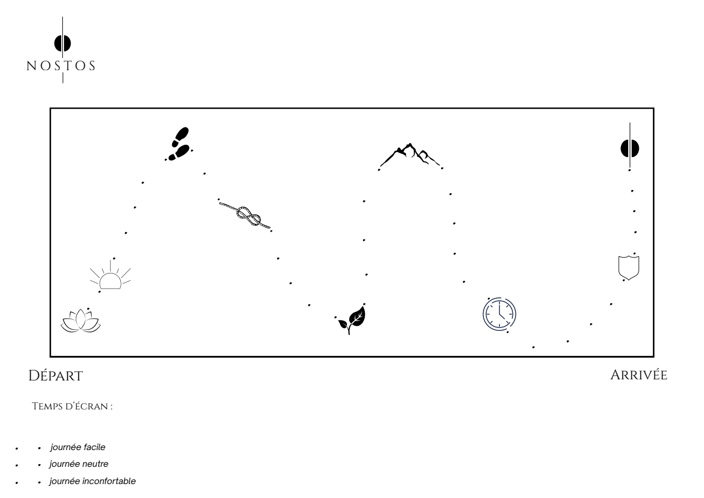

La carte pour se détacher de son téléphone en 30 jours.
Un voyage guidé par email, pour retrouver une relation choisie avec ton téléphone.
Programme digital · Paiement unique

Tu sens un décalage.
Tu te réveilles avec ton téléphone.
Il comble chaque silence.
Et tu t’en veux.
Tu n’es pas seul(e).
Il existe un chemin pour l’utiliser quand tu le décides.
La carte, les emails, le chemin
Une étape après l’autre.
Un email par jour. Des explications pour comprendre tes automatismes. Des actions à installer dans ta journée.
Sans effort brutal. Sans culpabilité.

Les journées faciles comme les journées inconfortables font partie du chemin.
Quelques étapes du voyage
Jour 0 Présentation de la carte
Jour 1 Première action : conscience sur un moment de la journée
Jours 2–3 Pourquoi le matin est important
Jour 4 Comprendre la dopamine
Jour 5 Deuxième action : bouffée d’air frais
Jour 6 Comprendre l’ennui
Jour 7 Troisième action : prise de contrôle
Jours 8–10 Comment on pirate ton cerveau
Jour 11 Quatrième action : reconstruction
La suite Les habitudes, les réactions du corps, les solutions, le soulagement.
De la place pour autre chose
Ce qu’ils ont retrouvé en chemin.
Du temps pour la musique. Pour lire.
Pour ce qui attendait.
À l’origine de Nostos
Nostos est né de cette recherche.
J’ai longtemps été happé par mon téléphone. Il me prenait du temps, de l’énergie, et surtout l’élan d’agir.
J’ai cherché à comprendre, puis créé un cadre pour changer progressivement. Autour de moi, beaucoup ressentaient ce même décalage.
J’ai voulu partager une manière concrète de passer à l’action, sans culpabiliser.
Antoine, créateur de NostosCe qui nourrit le programme
Inspiré des travaux d’Anna Lembke, Charles Duhigg, Gabor Maté et Cal Newport.
Un moment pour te raconter le voyage.
Ton premier pas
Échange le scroll pour
ce qui compte vraiment
pour toi.
Juste un voyage pour essayer autre chose.
- 30 jours guidés par email
- Ta carte de progression
- Des outils pratiques et un guide anti-rechute
- Un plan pour continuer après les 30 jours
Programme digital · Paiement unique
Tu te demandes peut-être.
Combien de temps faut-il par jour ?
Environ 5 minutes de lecture, puis des actions simples à appliquer dans ta journée. Certains challenges se poursuivent sur plusieurs jours.
Dois-je supprimer mes applications ?
Non. L’objectif est de retrouver un rapport intentionnel au téléphone : tu continues à l’utiliser, mais tu choisis comment.
Et si j’ai déjà essayé sans succès ?
Nostos propose un cadre progressif : comprendre tes automatismes, agir sur ce qui les déclenche et avancer avec un accompagnement quotidien.
Comment vais-je recevoir le programme ?
Le programme est digital, envoyé par email pendant 30 jours. L’accès débute le jour du paiement ; les contenus transmis restent accessibles sans limite de temps. Aucun coffret physique n’est expédié.
Et si ça ne me correspond pas ?
Pour connaître les modalités applicables, consulte les conditions générales de vente. Tu peux aussi nous écrire à bonjour@nostosprogram.com.